Yanmazlık
Binaların Yangından Korunması Hakkında Yönetmelik'in (BYKHY) istediği A1 sınıfı yanmaz malzeme kullanımını karşılar. Yangının gelişimine neden olmaz, aksine geciktirir.
Volkanik bir kayaçtan gelen hafiflik. Perlitli sıva, şap ve tarım perliti çözümleriyle yapınızı ısıya, sese ve ateşe karşı doğal yoldan koruyoruz.
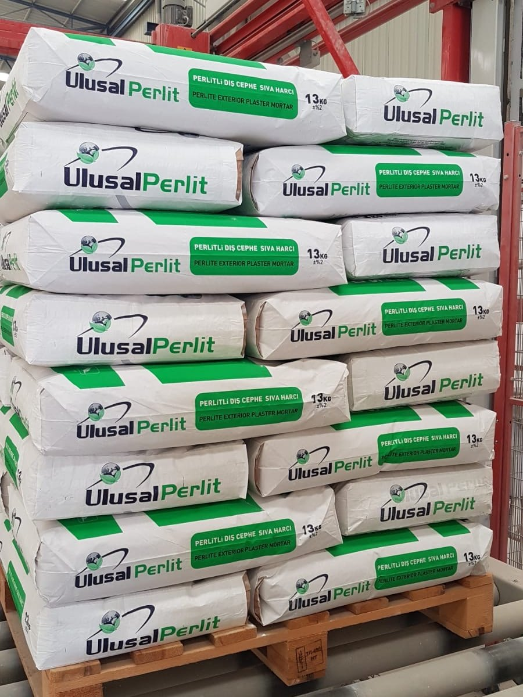
Isıtıldığında hacmi kat kat büyüyen, hafif ve gözenekli hâle gelen doğal bir mineral.
Perlit, asidik bir volkanik camdır. Isıyla genleşme özelliği olan, genleştirildiğinde çok hafif ve gözenekli hâle geçen bir kayaçtır. Bu genleşme sırasında yapısında milyonlarca kapalı hava hücresi oluşur; ısı ve ses yalıtımını sağlayan da tam olarak bu gözenekli yapıdır.
Doğal bir maden olduğu için kanserojen madde içermez, kendi karbon salınımını yapmaz. Isıtma ve soğutma ihtiyacını düşürerek binanın toplam karbon ayak izini de azaltır.
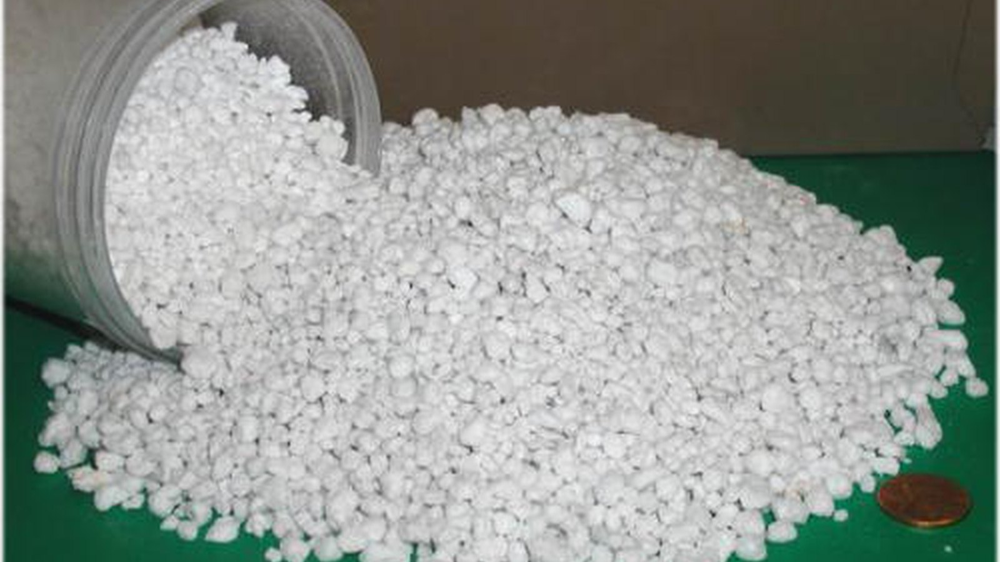
Binaların Yangından Korunması Hakkında Yönetmelik'in (BYKHY) istediği A1 sınıfı yanmaz malzeme kullanımını karşılar. Yangının gelişimine neden olmaz, aksine geciktirir.
Doğal bir maden olması sebebiyle kanserojen madde içermez. Kendi karbon salınımını yapmadığı gibi, ısıtma-soğutma ihtiyacını düşürerek karbon salınımını azaltır.
Düşük ısı iletkenliği ile iyi bir ısı yalıtımı sağlar; gözenekli yapısıyla ses yalıtımı yapar. Su itici özelliğiyle bünyesine su geçirmez.
Hafifliği ile kolay taşıma ve istifleme imkânı sunar. Dış cephede kara sıva, iç cephede alçı sıva gibi; el veya makine ile uygulanır.
Satırlara tıklayarak teknik değerleri açabilirsiniz.
Çimento esaslı ve perlitli, manuel veya makine ile uygulanabilen, ısı ve ses yalıtımı sağlayan sıva harcıdır. İç ve dış cephelerde tuğla, beton, briket ve gaz beton yüzeylerde yalıtım sıvası olarak kullanılır.
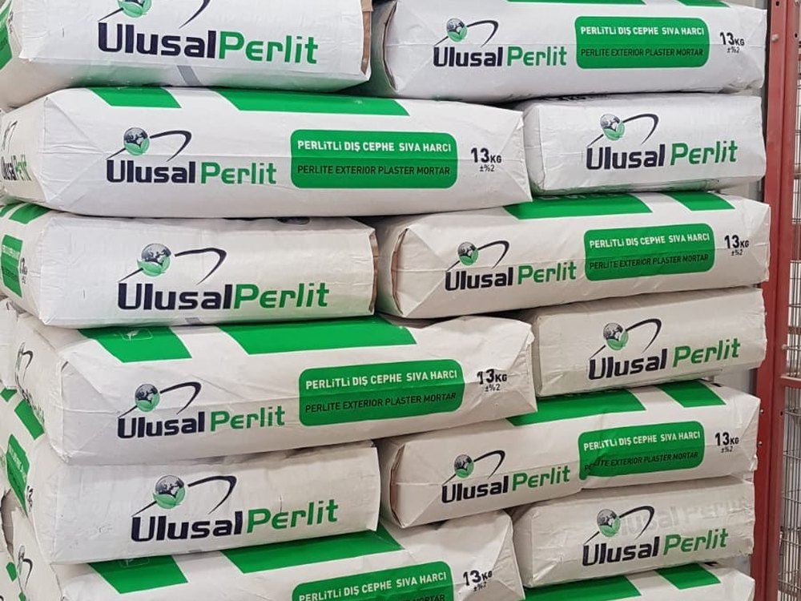
El ve makine ile uygulanabilen, ses ve ısı yalıtımı sağlayan çimento esaslı perlitli hazır sıva harcıdır. İç mekânlarda kaba sıva olarak uygulanır.
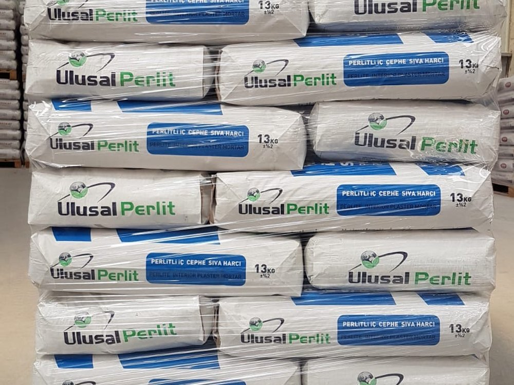
Isı ve ses yalıtımı sağlayan, çimento esaslı ve perlitli, manuel veya makine ile uygulanabilen hafif yalıtım şapıdır. Hafif ve orta yoğunluklu yaya trafiğine maruz zeminlerde; seramik, parke ve laminat kaplamaları öncesinde kullanılır.
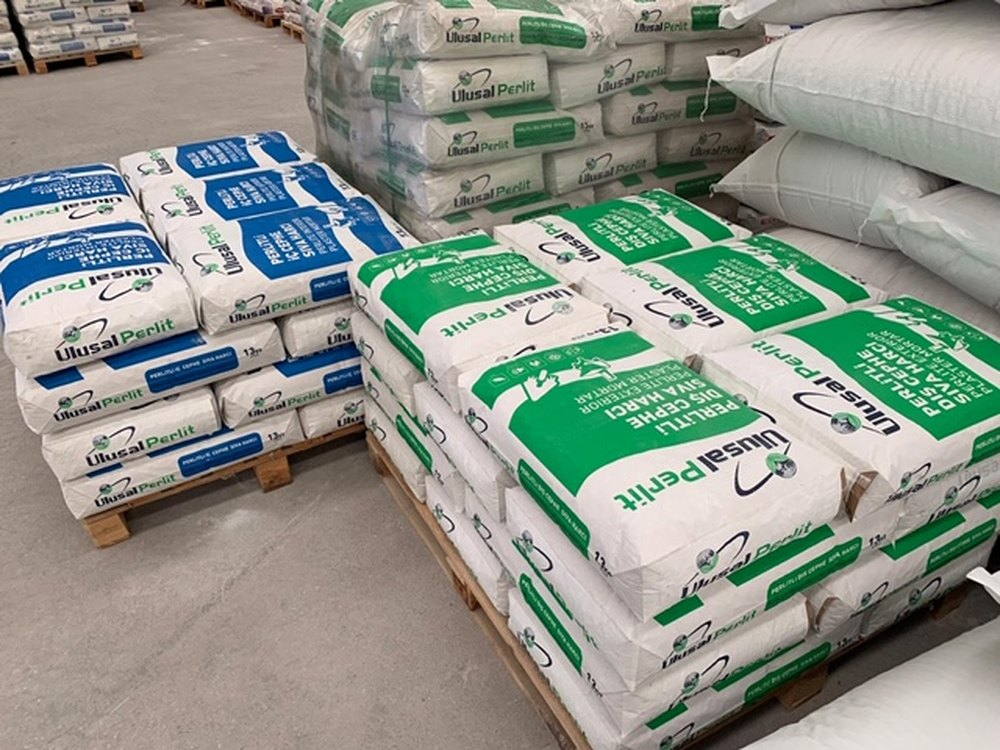
Seracılık, sebze yetiştiriciliği, fidecilik, çiçekçilik, mantarcılık ve topraksız tarım uygulamalarında toprak düzenleyicisi olarak kullanılan hafif malzemedir.
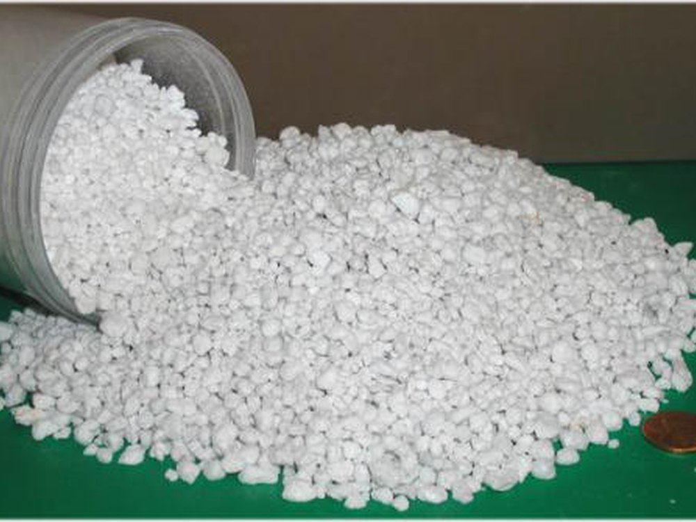
Değerler ürün teknik föylerinden alınmıştır; şantiye koşullarına göre değişiklik gösterebilir.
| Isı Yalıtım Sıvası | İç Sıva | Şap | |
|---|---|---|---|
| Kullanım yeri | Dış + iç cephe | İç cephe (kaba sıva) | Teras ve döşeme |
| Renk | Beyaz | Beyaz | Gri |
| Kuru birim yığın ağırlığı | 400 ± 50 kg/m³ | 500 ± 150 kg/m³ | 500 ± 70 kg/m³ |
| Basınç dayanımı | CS II | CS I | C5 · TS EN 13813 |
| Isıl iletkenlik sınıfı | T1 | T1 | — |
| Yangına tepki sınıfı | A1 | A1 | A1 |
| Uygulama kalınlığı | 10 – 30 mm | 15 – 20 mm | 30 – 70 mm |
| Sarfiyat (1 cm için) | 4 – 4,5 kg/m² | 4,5 – 5 kg/m² | 5,5 – 6,5 kg/m² |
| Kuruma süresi | 4 – 6 gün | 4 – 6 gün | 4 – 6 gün |
| Çalışılabilme süresi | 20 dakika | — | — |
| Ambalaj | 13 kg kraft torba | 16 kg kraft torba | 20 kg kraft torba |
| Raf ömrü | 1 yıl | 1 yıl | 1 yıl |
Depolama: kapalı orijinal ambalajında, serin ve kuru ortamda saklanmalıdır. Raf ömrü üretim tarihinden itibaren 1 yıldır.
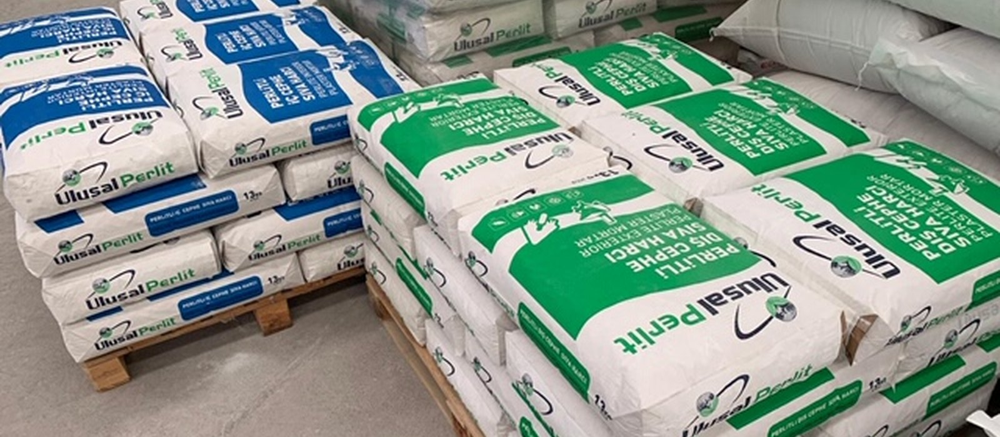
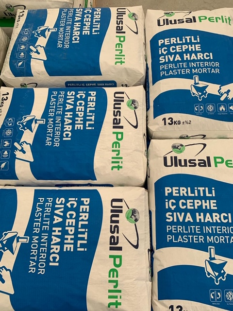
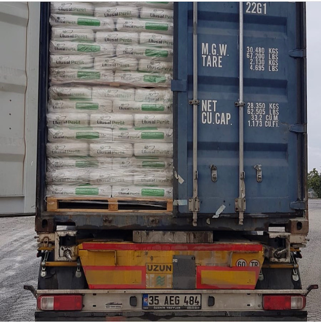
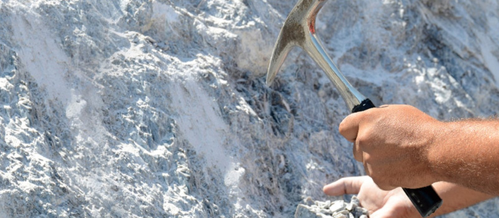
Üstlendiği her işi yaparken müşteri taleplerini ve yürürlükteki yasal mevzuat şartlarını karşılayan ürünler sunar.
Yaralanmaları ve sağlık bozulmalarını önlemek için her türlü önlemi alır.
Çalışmaları için gerekli enerji ve doğal kaynakları en etkin şekilde kullanır; israfı önler.
Ulusal Perlit, inşaat sektöründe uzun yıllar tecrübesi olan, sektöre hem malzeme üretimi ve tedariği hem de uygulama alanlarında hizmetlerde bulunmuş Ulusal Yapı'nın bir markasıdır.
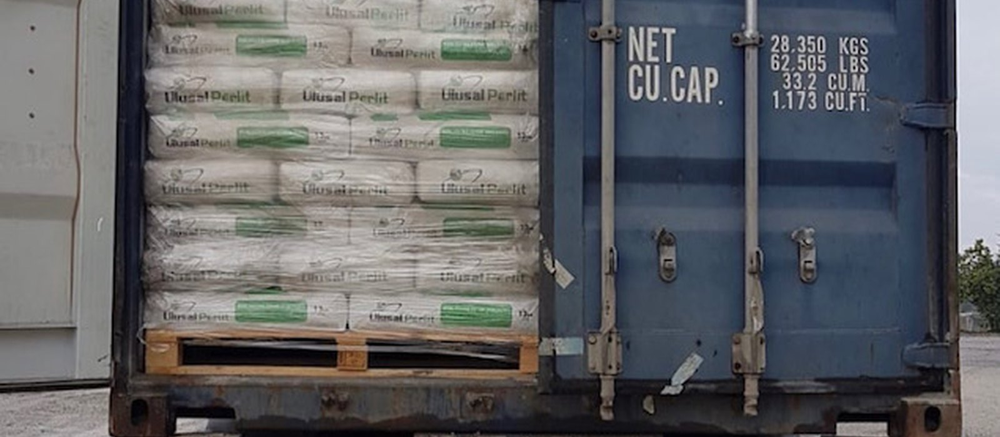
Yapı sektöründe satış ve uygulamayı en iyi hizmet kalitesiyle müşterilerimize sunmak; kurumsal ve ilkeli yaklaşımımızla sektörde fark yaratmak.
Çağdaş ve yenilikçi yapımızla, faaliyet gösterdiğimiz sektörlerde daima en iyisini gerçekleştirerek çalışanlarımıza, müşterilerimize ve ülkemize katma değer sağlamak.
Ulusal Yapı Danışmanlık ve Dış Tic. Ltd. Şti.
E-katalog, ürün teknik föyleri ve uygulama videoları için bizimle iletişime geçebilirsiniz.